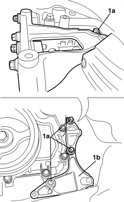
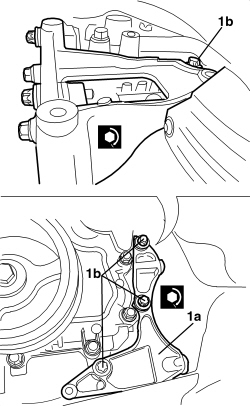
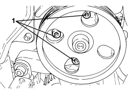
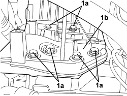

5040A26 AIR CONDITIONING COMPRESSOR SUPPORT - R.R.
- Path
- Procedures > 50 AUXILIARY UNITS > 5040 AIR CONDITIONING CASING AND COMPONENTS > 5040A AIR CONDITIONING REFRIGERANT CIRCUIT > 5040A26 AIR CONDITIONING COMPRESSOR SUPPORT - R.R.
- Kind
- repair procedure (removal / refitting; the operation number is the code)
- Applies to
- engines: 2.4 JTD 20v, 3.2 JTS; all production periods
- Interactive page
- https://sloeber94.github.io/elrnDB-aBrrSpdr/en/#/946002265
Applies to: engines: 3.2 JTS; all production periods
 Removing
Removing
 Refitting
RefittingOp. 5040 AIR CONDITIONING CASING AND COMPONENTS
- Position the vehicle on a lift.
- Drain the coolant.
Op. 0010T84 COOLANT FOR AIR CONDITIONING SYSTEM - DEHYDRATE AND REPRESSURIZE
Op. 4450B04 RIGHT FRONT WHEEL - R.R
Op. 7055B91 RIGHT FRONT WHEEL ARCH LINER - R.R.
Op. 7055B66 ENGINE COMPARTMENT DUST COVER IN RIGHT FRONT WHEEL ARCH - R.R.
Op. 5040A20 AIR CONDITIONING COMPRESSOR - R+R - INCLUDES FLUID LEVEL CHECK AND TOP UP IF NECESSARY
1. Undo the bolts (1a) and remove the compressor support (1b).

Applies to: engines: 3.2 JTS; all production periods
Refitting
Removing- Check that the compressor support is not damaged.
1. Place the compressor support (1a) in position, screw in the bolts (1b) and tighten them to the recommended torque.
Component | Fastening | dia | Value (daNm) | Validity |
|---|---|---|---|---|
COMPRESSOR MOUNTING | Bolt | M10 | 4.5 ÷ 5.5 | 3.2 JTS |

Applies to: engines: 3.2 JTS; all production periods
Op. 5040A20 AIR CONDITIONING COMPRESSOR - R+R - INCLUDES FLUID LEVEL CHECK AND TOP UP IF NECESSARY
Op. 7055B66 ENGINE COMPARTMENT DUST COVER IN RIGHT FRONT WHEEL ARCH - R.R.
Op. 7055B91 RIGHT FRONT WHEEL ARCH LINER - R.R.
Op. 4450B04 RIGHT FRONT WHEEL - R.R
- Lower the vehicle.
- Repressurize the coolant.
Op. 0010T84 COOLANT FOR AIR CONDITIONING SYSTEM - DEHYDRATE AND REPRESSURIZE
- Remove the vehicle from the lift.
Applies to: engines: 2.4 JTD 20v; all production periods
Removing
RefittingOp. 0010T84 COOLANT FOR AIR CONDITIONING SYSTEM - DEHYDRATE AND REPRESSURIZE
Op. 7055B54 UNDER ENGINE PROTECTION/GUARD - R.R.
Op. 4450B04 RIGHT FRONT WHEEL - R.R
Op. 7055B91 RIGHT FRONT WHEEL ARCH LINER - R.R.
Op. 1092C26 BELT FROM AIR CONDITIONER COMPRESSOR DRIVING POWER STEERING PUMP - R + R
Op. 5040A20 AIR CONDITIONING COMPRESSOR - R+R - INCLUDES FLUID LEVEL CHECK AND TOP UP IF NECESSARY
1. Unscrew the front and rear screws and move the power steering pump.

Applies to: engines: 2.4 JTD 20v; all production periods
1. Undo the bolts (1a) and remove the compressor support (1b).

Applies to: engines: 2.4 JTD 20v; all production periods
Refitting
Removing- Check that the compressor support is not damaged.
- Fit the compressor mount and tighten the bolts.
Tighten the compressor mount bolts.
- Position the power steering pump and tighten the bolts.
Tighten the bolts securing the power steering pump to the recommended torque.
Component | Fastening | dia | Value (daNm) | Validity |
|---|---|---|---|---|
Power assisted steering pump | Front bolt | M8 | (support side) 2.2 - 2.6 | 2.4 JTD 20V |
Component | Fastening | dia | Value (daNm) | Validity |
|---|---|---|---|---|
Power assisted steering pump | Rear bolt | M8 | (support side) 2.2 - 2.6 | 2.4 JTD 20V |
Op. 5040A20 AIR CONDITIONING COMPRESSOR - R+R - INCLUDES FLUID LEVEL CHECK AND TOP UP IF NECESSARY
Op. 1092C26 BELT FROM AIR CONDITIONER COMPRESSOR DRIVING POWER STEERING PUMP - R + R
Op. 7055B91 RIGHT FRONT WHEEL ARCH LINER - R.R.
Op. 4450B04 RIGHT FRONT WHEEL - R.R
Op. 7055B54 UNDER ENGINE PROTECTION/GUARD - R.R.
Op. 0010T84 COOLANT FOR AIR CONDITIONING SYSTEM - DEHYDRATE AND REPRESSURIZE
Topics linked from this page (10)
- 0010T84 COOLANT FOR AIR CONDITIONING SYSTEM - DEHYDRATE AND REPRESSURIZE
- 1092C26 BELT FROM AIR CONDITIONER COMPRESSOR DRIVING POWER STEERING PUMP - R + R
- 4450B04 RIGHT FRONT WHEEL - R.R
- 5040 AIR CONDITIONING CASING AND COMPONENTS
- 5040A20 AIR CONDITIONING COMPRESSOR - R+R - INCLUDES FLUID LEVEL CHECK AND TOP UP IF NECESSARY
- 5530A10 ALTERNATOR - R+R
- 7055B54 UNDER ENGINE PROTECTION/GUARD - R.R.
- 7055B66 ENGINE COMPARTMENT DUST COVER IN RIGHT FRONT WHEEL ARCH - R.R.
- 7055B91 RIGHT FRONT WHEEL ARCH LINER - R.R.
- 7210E10 R.R. FRONT BUMPER